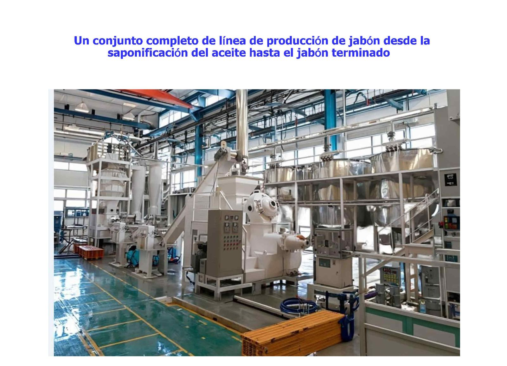
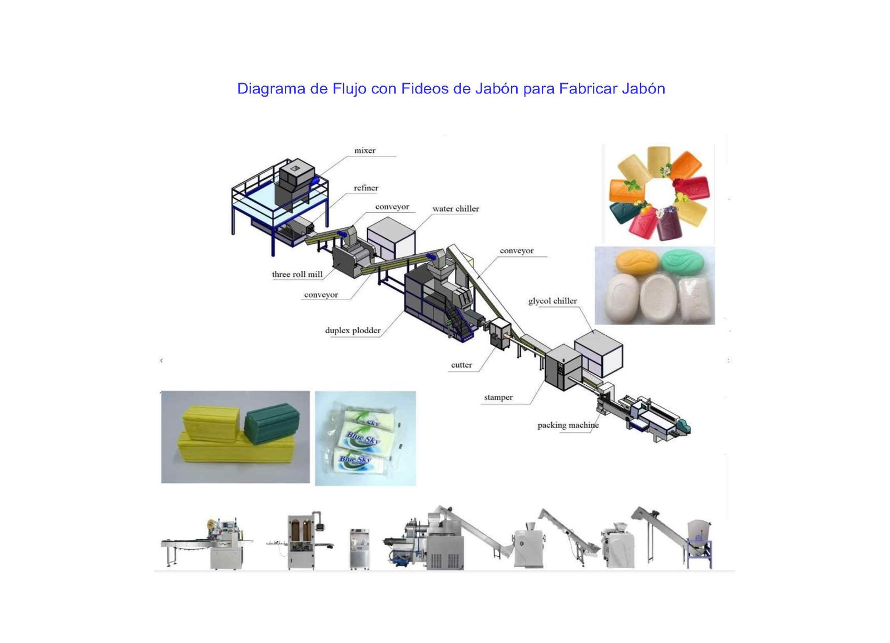
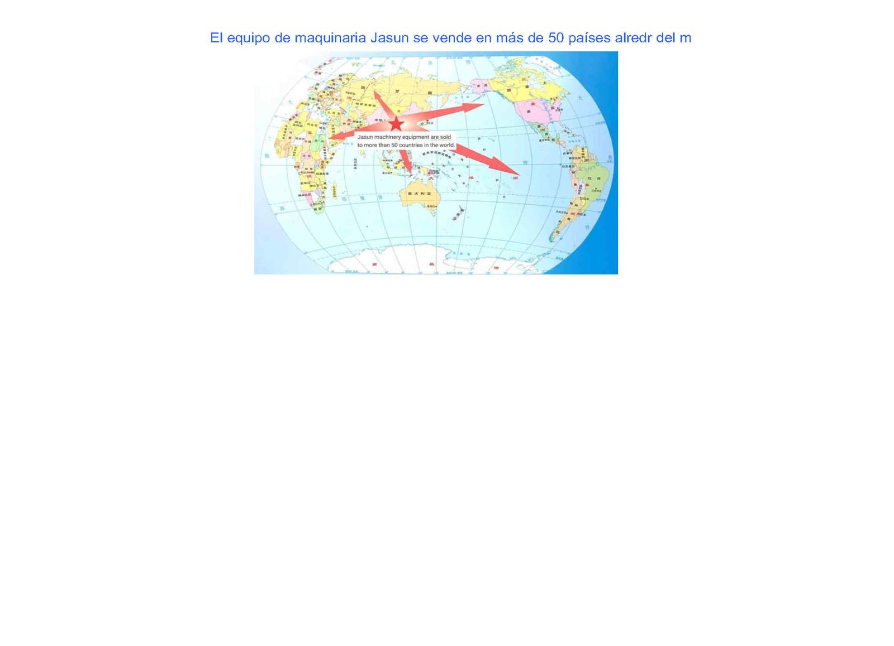

Fabricante Confiable de Maquinaria Industrial para Jabón
Establecida en 2005, Kaifeng Jasun Industry Co., Ltd. se especializa en maquinaria profesional para la fabricación de jabón y líneas completas de producción. Con más de dos décadas de experiencia industrial, nos dedicamos a proporcionar a los fabricantes mundiales de jabón maquinaria de procesamiento de alto rendimiento, desde la saponificación hasta el envasado final del jabón. Nuestras máquinas se han exportado a más de 50 países y regiones, incluidos países desarrollados como los Estados Unidos.
Proceso de fabricación de jabón a partir de aceite vegetal/grasas animales y sosa cáustica
El proceso se divide en dos etapas principales.
La primera etapa (Parte A) consiste en la saponificación y el secado para producir fideos de jabón. Esta reacción de saponificación combina aceite vegetal/grasas animales y sosa cáustica para formar la base del jabón. Esta base se procesa mediante un sistema de secado al vacío y una peletizadora, que la extruye en forma de fideos.
La segunda etapa (Parte B) transforma los fideos de jabón en jabón terminado. Los fideos se introducen en una mezcladora, donde se combinan con perfume y pigmento. La mezcla se introduce en una refinadora. Su objetivo principal es mezclar, homogeneizar y moler los ingredientes del jabón. Finalmente, los fideos pasan a un molino de tres rodillos, donde se muelen hasta obtener finas láminas de jabón. Estas finas láminas se transportan mediante una cinta transportadora a una extrusora de jabón de doble husillo o de un solo husillo, donde se refinan y se extruyen continuamente para formar una barra de jabón larga con la forma deseada. Posteriormente, la barra se corta y se le da forma para obtener barras individuales del tamaño requerido mediante una cortadora automática de jabón o una máquina de estampado de jabón. Finalmente, las barras de jabón terminadas se envuelven con una máquina de empaquetado (máquina de empaquetado de jabón tipo almohada, máquina de empaquetado de jabón en cajas o máquina de empaquetado de jabón en papel).
Un conjunto completo de línea de producción de jabón desde la saponificación del aceite hasta el jabón terminado

Diagrama de Flujo con Fideos de Jabón para Fabricar Jabón
- Mixer – mezcla uniformemente los fideos de jabón con perfume, pigmentos, aceites esenciales y aditivos.
- Refiner – pre-refina la masa de jabón mezclada.
- Three roll mill – muele el jabón para suavidad y color y fragancia uniformes.
- Duplex plodder (vacío) – extruye el jabón refinado en una barra continua y densa.
- Cutter – corta la barra larga en pastillas uniformes.
- Stamper – estampa las pastillas en barras terminadas con logotipos y formas.
- Packing machine – envuelve el jabón terminado para la venta.

Parte A:
Sistema de Saponificación y Secado al Vacío---Equipo de Producción de Fideos de Jabón
| 1 |  | Sistema de Saponificación y Secado al Vacío (Pequeño / Mediano)Sistema integrado de saponificación y secado al vacío de tamaño pequeño a mediano a partir de diferentes aceites y sosa cáustica para producir fideos de jabón. Capacidad: |
| 2 |  | Sistema de Saponificación y Secado al Vacío (Grande)Gran sistema de saponificación y secado al vacío a partir de diferentes aceites y soda cáustica para producir fideos de jabón. Capacidad: |
Parte B:
Equipo de Mezcla, Molienda, Extrusión, Moldeo y Máquina de Empaque de Jabón---Línea de Producción de Jabón
- mixer
- three roll mill
- soap plodder
- soap cutter
- soap stamper
- soap packing machine
Equipos de Mezcla, Refinado y Molienda
| 3 |  | Mezclador de Jabón IndustrialFunciones Principales y Principio de Funcionamiento: Este equipo es una pieza crítica de maquinaria en la etapa inicial de la línea de producción de jabón. Se utiliza principalmente para mezclar de manera altamente eficiente y uniforme fideos de jabón con varios aditivos, como perfumes, pigmentos, aceites esenciales y otros ingredientes auxiliares. El mezclador está equipado con palas de tornillo internas. Durante la operación, el motor impulsa el eje principal a rotar, utilizando el movimiento mecánico del tornillo para levantar, voltear y dispersar continuamente los fideos de jabón desde el fondo. Esta potente acción de corte y convectiva permite que los perfumes líquidos y los pigmentos sólidos penetren rápidamente y recubran uniformemente los fideos de jabón en un corto período de tiempo. En consecuencia, establece una base de jabón suave, refinada y de color consistente para los procesos posteriores de molienda y amasado (extrusión). Características Estructurales: |
| 4 |  | Refinador de PlodderAplicaciones: Características Clave: |
| 5 |  | Tres Rodillos MolinoTransformación y Modificación de Cristales: Después de mezclar, la cristalización interna del jabón puede ser desigual. El molino de tres rodillos utiliza extrusión a alta presión para forzar la transformación de los cristales de jabón, formando una estructura cristalina con mejor ductilidad y resiliencia. Esto asegura que el jabón final sea menos propenso a agrietarse y no es fácil que se vuelva blando al estar en contacto con agua. |
Prensado al Vacío y Estampado
| 6 |  | Prensadora de Jabón al Vacío de Doble Etapa (o Extrusora de Jabón al Vacío)Desaireación al vacío de alta eficiencia: El material de jabón pasa por una extracción completa de aire y burbujas dentro de una cámara de vacío sellada. Esto hace que la estructura interna del jabón sea excepcionalmente densa y compacta, evitando efectivamente cavidades internas o grietas, mientras que hace que la barra de jabón final sea más duradera y menos propensa a volverse mushy cuando se sumerge en agua. |
| 7 |  | Máquina Automática de Estampado de Jabón / Estampadora de Jabón Modelo XD120Moldeado por Compresión Tridimensional: El jabón que emerge del proceso anterior (el plodder de vacío) es simplemente una barra larga continua. A través del cierre y la sujeción de moldes superiores e inferiores (o izquierdos y derechos) de precisión, este equipo estampa las piezas de jabón en bruto bajo alta presión en barras de jabón de tocador terminadas con contornos perfectos, esquinas redondeadas o formas tridimensionales específicas. |
Estampado Automático
| 8 |  | Máquina de estampado de jabón de tocador automática XDA1000typeAplicaciones: Características Clave: |
Estampado, Corte y Refrigeración
| 9 |  | Máquina automática de estampado de jabón para inodoros neumáticos XD100Aplicaciones: Requisitos Auxiliares: |
| 10 |  | Máquinas automáticas de estampado y corte de jabónCorte Continuo de Precisión: La responsabilidad principal de este equipo es cortar de manera precisa y rápida la barra continua de jabón extruida del plodder al vacío en bloques de jabón individuales (en blanco) uniformes según las dimensiones objetivo preestablecidas. |
| 11 |  | Enfriador de baja temperaturaEnfriamiento de moldes profundos de precisión: Este equipo circula y entrega principalmente líquido de enfriamiento a baja temperatura para proporcionar una reducción continua y forzada de la temperatura para los moldes de metal dentro de la máquina automática de estampado de jabón. |
| 12 |  | Máquina de Agua de RefrigeraciónDisipación del Calor por Fricción para Evitar que el Jabón se Derrita: Cuando el molino de tres rodillos desgarra el jabón a altas velocidades y el plodder al vacío extruye el jabón bajo gran carga y alta presión, se genera una cantidad sustancial de calor físico por fricción. Este equipo inyecta agua fría en circulación en los rodillos huecos del molino y en los cilindros/camisas del plodder para evacuar el calor con fuerza, evitando que el jabón se ablande, se derrita o se adhiera a los rodillos por sobrecalentamiento. |
Vacío, Mini Línea y Empaque
| 13 |  | Bomba de vacíoExtracción de vacío de cámara de alta eficiencia: La responsabilidad principal de este equipo es conectar con la cámara sellada del extrusor de vacío, extrayendo completamente y de manera forzada el aire y las burbujas atrapadas entre los gránulos de jabón en su interior. |
| 14 |  | Equipo de producción de jabón mini integradoLínea de producción de microjabón de una sola parada: esta es una línea de producción de microjabón diseñada específicamente para talleres en casa, artesanos, pequeños estudios o laboratorios educativos. Características Clave: |
| 15 |  | Máquina de empaquetado de jabón, estilo almohadaEmpaque de almohada totalmente automático de alta velocidad: La responsabilidad principal de este equipo es envolver automáticamente las barras de jabón sólido moldeadas en una película compuesta de plástico, ejecutando sellado y corte horizontal en ambos extremos y sellado longitudinal en la parte posterior para formar un paquete de almohada completamente sellado. |
Encartonado, Papel y Moldes
| 16 |  | Máquina de cartón / Máquina de empaquetado de jabón, estilo de caja de cartónFormación y cartoneado automático completo: La responsabilidad principal de este equipo es succionar automáticamente planchas de cartón planas y prefabricadas, erigirlas en cajas formadas, empujar con precisión las barras de jabón dentro y completar automáticamente el plegado de la tapa de la caja, el metido o el sellado con pegamento termofusible. |
| 17 |  | Máquina de Empaque de Jabón, estilo de papel suaveDoblado y Envoltura Automática de Papel Suave de Doble Capa: La responsabilidad principal de este equipo es aplicar una envoltura de dos capas a las barras de jabón moldeadas. La capa interna es típicamente un refuerzo/línea de cartón rígido (utilizado para la retención de forma y soporte estructural), mientras que la capa externa es un papel suave recubierto o papel compuesto impreso con gráficos exquisitos. Durante el empaque, ejecuta automáticamente el plegado de extremos y el metido de esquinas, formando una apariencia clásica y retro de barra envuelta. |
| 18 |  | el molde de jabón se personalizará según la forma, tamaño y logo del jabón requerido por el compradorImpartiendo la forma geométrica tridimensional final: El molde consiste en dos mitades principales que encajan (el troquel macho superior y el troquel hembra inferior). Cuando el blank de jabón se introduce y se somete a un estampado mecánico o neumático o de alta presión, el cuerpo del jabón sufre deformación plástica dentro de las cavidades del molde, dando origen a geometrías perfectas ovaladas, redondas, rectangulares o varias geometrías irregulares personalizadas. |
El equipo de maquinaria Jasun se vende en más de 50 países alrededor del mundo

Contáctenos para una Cotización y Catálogo Gratis
Póngase en contacto con nuestro equipo de ingeniería directamente a través de WhatsApp o correo electrónico para obtener precios y especificaciones.
💬 Contactar por WhatsApp WhatsApp: +86-13937853263✉ Correo: jasunmachinery@gmail.com